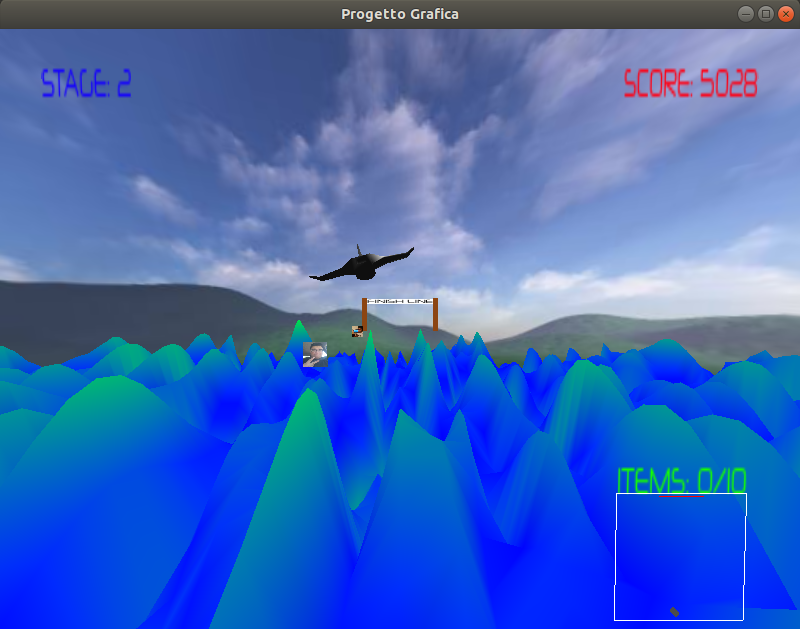
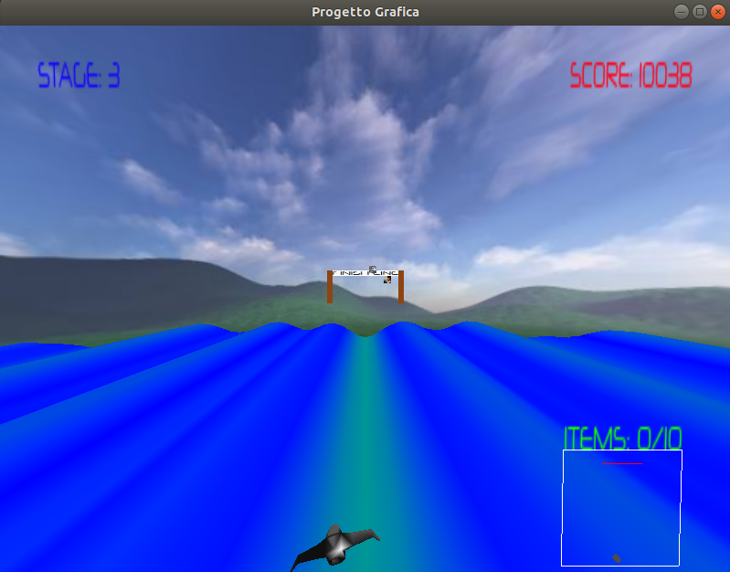
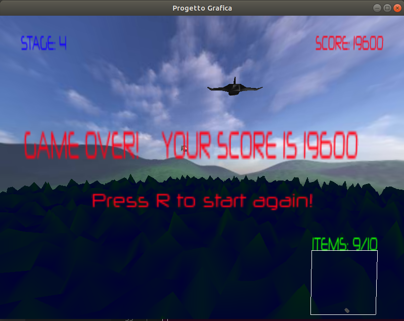
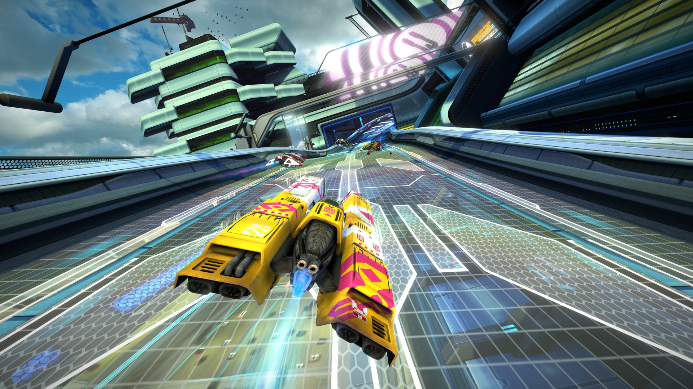
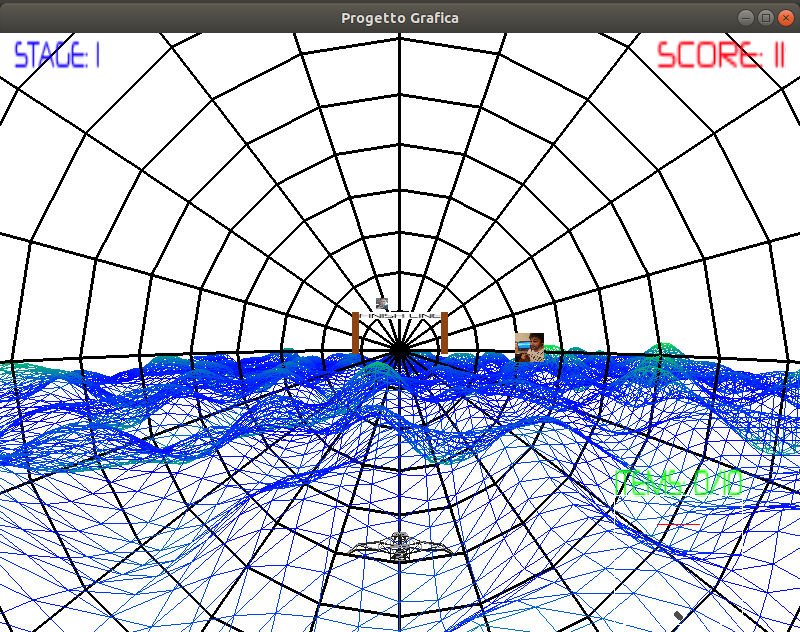
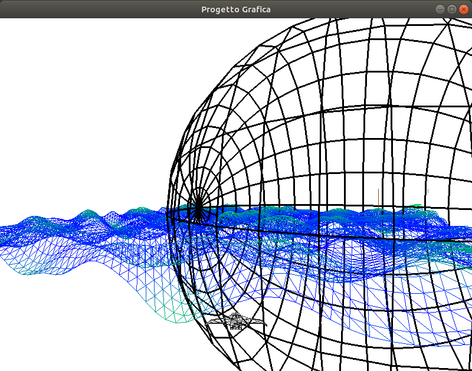

Il progetto consiste nella realizzazione di un videogioco 3D utilizzando OpenGL e linguaggio C++, sviluppato nel periodo estivo per essere consegnato a Settembre.
Il videogioco si può definire di genere "arcade", dove il giocatore deve rimanere più tempo possibile in gioco, incrementando il punteggio col passare del tempo o prendendo degli oggetti. Si comanda una piccola astronave potendola spostare a destra e sinistra e in alto e basso, mentre essa vola su un terreno che cambia forma.

La visuale presentata al giocatore mostra la nave da dietro, sopra al terreno, avendo davanti un paesaggio e vari oggetti (delle foto) che vanno verso la nave. Il giocatore deve spostare la navetta per prendere gli oggetti (che sono delle "foto"), in questo modo guadagna dei punti extra ed aumenta il contatore degli oggetti ottenuti. Il "traguardo" della corsa si avvicina in ogni istante, quando è la nave ci passa attraverso il gioco termina, invece ottenendo 10 oggetti la posizione del traguardo si resetta alla sua posizione iniziale, così da dare del tempo in più per raggiungere un punteggio maggiore. Oltre questo, si passa anche allo "stage" successivo, cioè cambia la forma che il terreno può prendere.
  Per giocare, si utilizzano i tasti W A S D per muovere la nave. Con R si resetta il gioco, da premere al Game Over. Il gioco vero e proprio è questo, però testare e provare altre cose ho inserito altri tasti da utilizzare. Con C si cambia modalità, la telecamera è fissa sulla nave e ci si può muovere avanti e dietro con W e S. Con V si attiva il rendering in wireframe e con SPACE si incrementa il contatore degli oggetti (items).
Ho realizzato il videogioco su una macchina Linux (Ubuntu 18), utilizzando OpengL e GLU e il linguaggio C++ (con il quale questa è stata la mia prima esperienza). L'idea è nata dal voler creare un gioco di corse, ma con navette futuristiche ispirato dal videogioco WipeOut, qui mostrato:

Dopo aver creato in Blender una piccola astronave, utilizzando lo stile grafico "low poly" sopratutto perché più facile per un principiante nella modellazione 3D, sono passato allo sviluppo del software per poter disegnare sullo schermo il modello creato e comandarlo via tastiera. Le prime versioni del programma facevano uso degli shaders (Vertex Shader e Fragment Shader) e della pipeline programmabile di OpenGL. Non potendo usare altre librerie ho sviluppato una piccola classe per gestire matrici 4x4 con le relative operazioni, principalmente la moltiplicazione tra matrici. In questo modo calcolo la matrice del modello, di vista e di proiezione per poi passarle al vertex shader tramite variabili uniform. A quel punto nello shader si moltiplicano le matrici tra di loro, e poi al vettore della posizione di ogni vertice. Per muovere l'oggetto, basta effettuare traslazioni e rotazioni alla matrice del modello.
Questo approccio non ha dato grandi risultati in termini di performance, per questo motivo prima di passare al metodo che ho utilizzato nella versione attuale, ho provato ad eseguire le 3 moltiplicazioni tra le matrici modello, vista e proiezione in anticipo, prima di comunicare i dati agli shaders. In seguito si passa al vertex shader direttamente la matrice risultato (la matrice MVP). In questo modo non bisogna ricalcolare per ogni singolo vertice la matrice MVP (che sarà sempre la stessa). Le performance sono migliorate, però avendo diversi oggetti in scena, soprattutto se molto dettagliati (come un circuito di corsa per le gare), degradavano velocemente e l'interazione con il giocatore era rovinata.
Da qui è nata l'idea di usare un terreno auto generato dal videogioco, invece che usare un modello creato in Blender, ed applicare l'algoritmo Perlin Noise per per formare colline o montagne. Il terreno è, quindi, una griglia di vertici nxn sul piano x, z. Inzialmente il valore y per ogni vertice è 0, ma durante il gioco si calcola ad ogni frame i valori delle y con Perlin Noise. In più, incrementando ad ogni frame i valori passati all'algoritmo, questo darà in output valori diversi da usare per la y ma abbastanza simili tra di loro in modo tale da creare un movimento fluido. In questo modo si possono creare delle animazioni, come quelle usate, dove rialzature appaiono ad una estremità e in modo fluido si muovono verso l'altra estremità. Questo dà l'illusione che l'astronave stia volando in avanti, in realtà essa è bloccata ad un punto vicino una estremità e la griglia viene fatta muovere (o meglio, i vertici alzati e abbassati di continuo) così da far avere le rialzature che vanno verso la nave. Inoltre, in base alla posizione y dei vertici, essi vengono colorati di verde o blue. Più è in alto più è verde e viceversa più in basso più è blue.
 Utilizzando il rendering wireframe si può vedere la griglia di vertici (e la skybox) sia dalla visuale di gioco che da lontano.
Per via della mia inesperienza con C++, e sicuramente per l'implementazione delle matrici e le varie operazioni oltre che al laptop poco efficiente, le performance non sono migliorate nel modo richiesto. Per questo motivo mi sono spostato alla pipeline fissa, così da poter anche vedere i vari esempi visti nel corso. Ho utilizzato le classi "Point3" e "Mesh" del progetto mostrato nel corso per gestire i modelli 3D e poche altre cose da usare come base per partire di nuovo. Così il videogioco è diventato "utilizzabile", e vedendo la resa del terreno fatto in quel modo è nata la scelta di creare un gioco stile arcade a punti, invece di una ispirazione a WipeOut. Spostandomi quindi su questo tipo di giochi, ho anche deciso che il giocatore non può spostarsi all'infuori di ciò che è visualizzato, quindi non può superare i bordi della finestra. Andando fuori da un bordo, la nave viene spostata all'estremità opposta. Per far questo ho usato alcune funzionalità di GLU, "project" e "unproject", per mappare la posizione della nave dalle coordinate mondo a coordinate window e viceversa. Indipendentemente dalle dimensioni della finestra, posso sapere quando la nave esce da un bordo e traslarla alla posizione di un altro.
Aggiungendo oggetti in gioco con cui interagire, ho scelto di usare foto personali (la mia e di un mio collega) siccome è requisito del progetto usare una foto personale, e in tal caso volevo fosse di un certo rilievo nel gameplay. Questi oggetti sono dei quadrati su cui sono applicate textures, specificando esplicitamente le coordinate UV. In realtà sono solo 2 quadrati, che vengono randomicamente posizionati davanti la nave e vengono spostati verso la visuale, riducendo il valore z ad ogni frame. Quando vanno dietro la visuale, o vengono raccolti, sono nuovamente posizionati randomicamente indietro, così da poter essere raccolti di nuovo.
Una tecnica simile è stata usata per il traguardo, chiamato "Finish Line." Questo è formato da 3 rettangoli e il testo "FINISH LINE." Ad ogni frame si avvicina e se supera la nave il gioco dà Game Over. Invece se il giocatore raccoglie 10 oggetti, la posizione viene resettata all'inizio. Per questo motivo sono stati aggiunti anche gli "stage." Un secondo fattore da usare come punteggio. Inizialmente ogni stage doveva avere una generazione dei valori y diversa, così da avere formazioni sempre più particolari del terreno. Fino al terzo stage ho inserito diversi valori da usare come offset per avere risultati interessanti, al quarto stage assegno valori randomici ma poi ripeto in modo ciclico questi quattro.
Per sperimentare con le luci, al quarto stage ho voluto provare ad inserire un ciclo notte/giorno, modifico ad ogni frame la posizione x e y della luce utilizzando le funzioni trigonometriche coseno e seno per dargli un movimento rotatorio. Si può vedere bene l'effetto sul terreno che si inscurisce gradualemente per poi tornare più chiaro.
Infine per controllare la nave, ho utilizzato il design pattern "Command", così da generare dei comandi associati ai tasti W A S D della tastiera. Questi comandi invocano i metodi che spostano il modello. Facendo così, per aggiungere un qualsiasi joypad diventa automatico avendo aggiunto questo strato di astrazione ai metodi della nave. Putroppo non avendo alcun joypad da usare, non ho aggiunto il suo utilizzo.